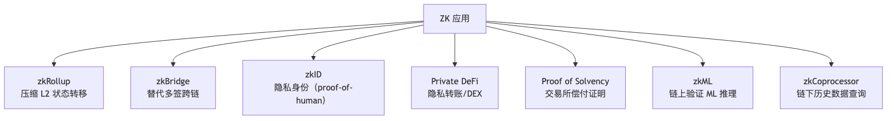
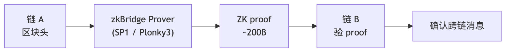

版本：2026-04-27。工具链：Circom 2.2.2、snarkjs 0.7.6、SP1 v5 Hypercube、Risc0 v3.0.5、Noir 1.0 pre-release、Plonky3 2026-03 production-ready、Stwo 2.0.0。
读者画像：刚学完 Solidity，零密码学背景。目标：能用 zkVM 写出第一个 ZK 应用。 主线 ≤ 30 页 PDF；数学推导与系统深度剖析见附录 A–H。
TL;DR：本模块帮你从零开始跑通第一个 ZK 应用。主线 8 章，每章 ≤ 800 字；附录 A–H 是按需查阅的深度参考。
2022 年 8 月，OFAC 制裁 Tornado Cash，开发者被捕。2026 年，Aleo 主网跑着 Circle USDCx、SP1 Hypercube 用 16 张 RTX 5090 在 12 秒内证完一个 ETH L1 区块。ZK 已从学术爱好变成生产基础设施。
fn main() 就够）<-- 时知道这可能是 under-constrained 漏洞。Week 1-2 : 主线第 1-3 章 + Vitalik zk-SNARK 三连发
Week 3-4 : 主线第 7 章实战（Circom → SP1 fib 全跑通）
Week 5-6 : Justin Thaler 教科书第 1-7 章 + ZK-MOOC 视频
Week 7-8 : 附录 B（SNARK/STARK 比较）+ 附录 H（漏洞剖析）
Week 9-10 : 选一个证明系统精读（Halo2 PSE / Plonky3）
Week 11-12: 做一个端到端项目（zk-airdrop / proof-of-solvency / zkML demo）
前置模块：07-L2 与扩容（zkRollup 把 L2 状态转移正确性证给 L1，用的就是本模块的技术）。生产 ZK 仍需读 Justin Thaler Proofs, Arguments, and Zero-Knowledge 并经专业审计。
TL;DR：ZK = 证明我知道某件事，但不公布这件事本身。三条性质：完备性 / 可靠性 / 零知识。
你想向 DeFi 合约证明「我有提款资格」，但又不想暴露存款地址。直觉是「公布 hash(密钥)」——但攻击者拿着这个 hash 可以直接撞库。ZK 给了一个根本不同的答案：一个 200 字节的 proof，跟密钥没有任何可以撞的关系。
公开 hash(x)=y 既不是零知识也不是知识证明。原因：
ZK 同时满足两件事：(1) 证明你真的持有 witness；(2) proof 不让 verifier 缩小对 witness 的猜测空间。
洞口
|
[Victor]
|
岔路
/ \
左 右
\ /
[门：需要密语]
Peggy（持密语）随机走左或右；Victor 随机喊「从左/右出来」。不知密语时每次猜对概率 1/2，重复 40 次作弊概率 < 2^-40。全程 Victor 一个比特密语信息都没获得。
| 性质 | 一句话 | 违反后果 |
|---|---|---|
| 完备性（Completeness） | 诚实 Prover 一定能说服诚实 Verifier | 合法用户无法正常使用 |
| 可靠性（Soundness） | 作弊 Prover 几乎不可能骗过 Verifier | 攻击者伪造 proof |
| 零知识（Zero-Knowledge） | Verifier 除了「陈述为真」之外学不到任何东西 | 隐私泄露 |
工程上还要两个性质，理解它们能少踩很多坑。
Knowledge Soundness（知识可靠性）：光证「存在 x 满足 P(x)」还不够——比如「存在 x 使 x² = 4」，谁都知道答案是 ±2，prover 没掏出任何「知识」。我们要的是更强的「你真的算得出 x」。形式化定义靠 extractor：存在一个算法，能从能跑通的 prover 里把 witness 提取出来；如果不能，那 prover 就是在猜。Tornado Cash 这类隐私池靠的就是 KS——证明你「持有」某 secret，而不是「存在某 secret」。
Succinctness（简洁性）：proof 短（≤ 几 KB）+ verifier 快（≤ 几十 ms），这就是 SNARK 名字里的 S（Succinct）。反例：直接发整段执行轨迹给 verifier 也能验，但既不短也不快，就不算 SNARK。SNARK proof 约 200B-1KB，STARK proof 约 50-200KB——都算 succinct，但前者更激进。
| SNARK | STARK | |
|---|---|---|
| 典型 proof 大小 | ~200B–1KB | ~50–200KB |
| Trusted setup | 需要（PLONK 系）或不需要（Halo2 IPA） | 不需要 |
| 抗量子 | 否（依赖椭圆曲线） | 是（依赖哈希） |
| EVM gas | 低（~25–40 万） | 高（需 Groth16 wrap） |
| 代表 | Groth16、PLONK、Halo2 | STARK、Stwo、Plonky3 |
💡 记忆口诀：完备性让好人能用，可靠性让坏人骗不过，零知识让旁观者学不到。再加 KS（你真的知道）+ Succinctness（proof 又短又快验）——五件套凑齐才叫工程级 ZK。
Fiat-Shamir 变换和多项式承诺的数学推导见附录 A；under-constrained 与 Fiat-Shamir 漏洞剖析见附录 H。
A：ZK 不就是把 hash 发给我？ B：不是。hash 可以撞库。ZK proof 是 200 字节，协议强迫 prover 在一个随机点上对一段只有真的知道答案才能算出的多项式做回应。 A：proof 万一是假的？ B：作弊概率约等于 1/2^254，比宇宙中原子数还小。
下一章映射到实际场景：ZK 隐私转账 / Rollup 验证 / 链下计算，每个场景 Prover 持有什么 witness、Verifier 验什么陈述。
TL;DR：ZK 在 Web3 有七个真实战场。每个场景 Prover 持有不同的 witness，Verifier 验不同的陈述。
2026 年私有 DeFi TVL 超过 15 亿美元，Worldcoin 已向 1800 万人发出 proof-of-human，交易所普遍提供 Merkle Sum Tree 偿付能力证明。这些应用背后都是同一套技术——差别只在 witness 和陈述是什么。

Prover 持有 L2 所有交易的执行细节，向 L1 合约证明「这批交易执行后，新状态根是 X」。
跨链桥历史黑客（Ronin $625M、Wormhole $326M）都是多签被攻破。zkBridge 用 ZK light client 证「链 A 上某事件已被确认」，信任从「m-of-n 人不勾结」降到「数学正确性」。
主流：Polyhedra zkBridge（25+ 链）、Succinct Telepathy（接入 LayerZero）。
Prover 持有存款 secret，证「我知道某 Merkle 叶子的原像」但不暴露 secret。
场景 5 速读：FTX 崩盘后，交易所需向用户证「资产 ≥ 负债」。技术从 v1 朴素 Merkle Sum Tree → v2 zkPoR（加 ZK range proof 禁负余额）→ v3 链上结算实时化。赶时间的读者只看本节这两行即可跳到场景 6；对 PoR 工程感兴趣再往下读三代演进。
FTX 崩盘后，交易所需证明资产 ≥ 用户负债。用 Merkle Sum Tree + ZK proof，每个用户能验自己的余额被包含、总和正确，但看不到别人余额。Binance、Kraken、OKX 均已部署。
2022-11 FTX 在 72 小时内从「全球第二大 CEX」变成全员维权对象。事后审计显示：FTX 把用户存款挪给 Alameda 做杠杆，链上钱包余额远低于内部账本负债。社区共识由此形成——CEX 必须以可验证的方式证明：链上资产 ≥ 用户负债总和，而且证明频率要远高于传统季度审计。这套机制叫 Proof of Reserves（PoR）/ Proof of Solvency。
PoR 三年内迭代了三代，每代修复上一代的攻击面：
核心结构：
node.sum = left.sum + right.sum，node.hash = H(left.hash || left.sum || right.hash || right.sum)；用户侧自验（伪代码）：
# pip install merkle-proof-verifier
# 包名仅示意（PyPI 未发布）；实际可用 hashlib 手写约 10 行验证
from binance_por import fetch_self_proof, verify_inclusion
proof = fetch_self_proof(user_id, asset="BTC") # JSON: {leaf, siblings, root, total_sum}
ok = verify_inclusion(proof.leaf, proof.siblings, proof.root)
assert ok and proof.leaf.amount == my_balance_in_app
Binance PoR JSON 字段大致是 {user_id_hash, asset, amount, siblings: [{hash, sum, position}]}，OKX 类似但叶子用 BLS12-381 域元素。
v1 的三个攻击面：
核心：把 v1 的 Merkle Sum Tree 升级成 ZK 电路，证明：
Circom 风格电路片段（约 30 行核心约束）：
template SumTreeNode() {
signal input left_hash; signal input left_sum;
signal input right_hash; signal input right_sum;
signal input amount; // 当前叶子余额
signal output node_hash; signal output node_sum;
// 关键 1：和等式
node_sum <== left_sum + right_sum + amount;
// 关键 2：无负余额——LessThan + 上界，单 Num2Bits 不够（域元素 mod p 问题）
// 约束：用 LessThan 限制 balance ∈ [0, 2^64)
// Num2Bits 单独不够——域元素 mod p 时 -1 也能分解为 64-bit
component lt = LessThan(64);
lt.in[0] <== amount;
lt.in[1] <== 2**64;
lt.out === 1;
// 关键 3：哈希绑定
component h = Poseidon(5);
h.inputs[0] <== left_hash; h.inputs[1] <== left_sum;
h.inputs[2] <== right_hash; h.inputs[3] <== right_sum;
h.inputs[4] <== amount;
node_hash <== h.out;
}
OKX 自 2023 起每周发布 zkPoR，证明 zk 电路约束「∀ leaf: balance ≥ 0 ∧ Σ balance = total_liability」，并把 proof 发到自家 explorer 供任何人验证。
v2 仍然是「快照式」证明，没法防快照间挪用。v3 思路是把账本搬到链上或链下不可篡改通道：
| 交易所 | 频率 | 方案 | 资产覆盖 |
|---|---|---|---|
| Binance | 月度 | zkSNARK PoR（2022-12 起，Polyhedra zkProver / Plonky2，非纯 Merkle Sum） | BTC/ETH/USDT 等 9 资产 |
| OKX | 月度 | v2 zkPoR（截至 2026-04 仍月度发布，非每周） | 22 资产 |
| Crypto.com | 季度 | v1 Merkle Sum + Mazars 审计 | 主流 7 资产 |
| Kraken | 半年 | v1 + 第三方审计 | 全资产 |
| Bybit | 月度 | v2 zkPoR（2024 起） | 主流 |
即使部署了 v2，PoR 仍非「绝对偿付能力」证明：
balance ≥ 0，但若交易所把爆仓账户从树里删掉，电路无法察觉删除行为。需要外部审计交叉对账户增长曲线 vs. 链上交互曲线。工程上的实践建议：作为用户，至少应当（1）每次 PoR 公布后用工具自验自己叶子在树里、（2）订阅 DeFiLlama PoR Dashboard 看交易所储备/负债比、（3）大额资金优先选择走 ClearLoop 或链上自托管。作为研发，PoR 系统的 attack surface 不在密码学而在「输入数据真不真」——这恰好是 OSINT 与 ZK 工程的交叉地带。
证明「推理结果来自指定 model X」。2025 年 Lagrange DeepProve-1 第一次对完整 GPT-2 (1.5B 参数) 生成 ZK proof。当前性能：千万参数 CNN ~分钟级，数十亿参数 LLM 走 opML 混合路线。详细 benchmark 见附录 E。
EVM 合约只能访问最近 256 个区块头。zkCoprocessor 把「链下历史查询 + 大计算」包成 proof 返回链上。
典型需求：「证明地址 A 在过去 100 万区块的总转账 ≥ 1 ETH」，用于积分空投、跨链状态验证。
主流：Brevis、Axiom、RISC Zero Steel、SP1 Reth。
| 场景 | Prover 持有 | Verifier 验 | 推荐工具 |
|---|---|---|---|
| Rollup 状态转移 | L2 交易细节 | 新状态根正确 | SP1 / Risc0 |
| 隐私转账 | 存款 secret | Merkle 成员 | Circom / Noir + Groth16 |
| 跨链消息 | 区块头内容 | 区块已确认 | zkBridge |
| 机器学习推理 | 模型权重 + 输入 | 推理结果正确 | EZKL / DeepProve |
| 历史数据查询 | 链上历史 | 聚合结果正确 | Brevis / Axiom |
ZK 的「用在哪」清楚了。下一章解释「用之前要做的一件事」——Trusted Setup，以及为什么 1-of-N 信任假设是密码学里几乎最强的保证。
只用 zkVM 可跳过本章——SP1/Risc0/Plonky3 都是 STARK 系不需要 setup。本章用得到 Groth16/PLONK 时再回查（§7 Circom 实战）。
TL;DR：SNARK 需要一次「生成公共参数」的仪式（ceremony）。只要参与者中至少一个人诚实销毁了自己的随机数，整个系统就是安全的。以太坊 KZG ceremony 有 14 万人参与。
2019 年，Zcash 的 Sapling ceremony 有约 100 人参与。每个人独立生成一段随机数 τ_i，把 [τ_i]G 发给下一个人，然后销毁 τ_i。如果全部 100 人都没销毁怎么办？那最终 τ = τ_1 · τ_2 · ... · τ_100 就被人知道，可以伪造任意 proof。但只要其中 1 个人诚实销毁了——τ 就永远无法重建。这就是「1-of-N 信任假设」，密码学里几乎最强的信任根之一。
SNARK（特别是 Groth16 / PLONK / KZG 系）的 Verifier 需要一个固定的参数集合 SRS（Structured Reference String），里面藏着 τ^i · G 这些值。问题：τ 知道之后可以伪造任意 proof，所以 τ 必须在计算完 SRS 之后销毁。但谁来生成 τ？如果只有一个人，你必须完全信任他。
解决方案：多方计算（ceremony），每个参与者独立贡献一个随机数，最终 SRS 的安全性只需要至少 1 个参与者诚实。
STARK 不需要 Trusted Setup——它的安全性基于哈希函数，无需预生成参数。代价是 proof 更大（几十~几百 KB），需要 Groth16 wrap 上链。
| Ceremony | 年份 | 参与人数 | 当前用途 |
|---|---|---|---|
| Zcash Sapling MPC | 2017 | ~100 | Zcash Sapling（历史） |
| Hermez / Perpetual Powers of Tau | 2019–至今 | 80+ 轮持续 | Circom 教程默认使用 |
| 以太坊 KZG ceremony | 2023-Q1 | 140,000+ | EIP-4844、PLONK 通用 SRS、Verkle Tree |
实操结论：直接使用以太坊 KZG ceremony 的输出（final.ptau）。绝对不要为主网应用自己跑 ceremony。
SNARK（KZG 系）
Trusted Setup → 1-of-N 信任假设 → proof ~200B–1KB → EVM gas 低
STARK（FRI 系）
无 Setup → 纯数学安全（哈希） → proof ~50–200KB → 需 Groth16 wrap 上链
→ 抗量子（哈希基础，不依赖椭圆曲线）
使用以太坊 KZG ceremony SRS：
# 下载 Hermez ptau（circom 用）
wget https://hermez.s3-eu-west-1.amazonaws.com/powersOfTau28_hez_final_12.ptau
# 直接复用，不需要自己贡献
snarkjs groth16 setup circuit.r1cs powersOfTau28_hez_final_12.ptau circuit_0000.zkey
KZG ceremony 的 SRS 适用于所有容量 ≤ 2^28 的 PLONK 系电路，无需重做。
明白了「用什么参数」，下一章开始动手：用 zkVM 写第一个可证明的 Rust 程序。zkVM 是 ZK 的「高阶接口」——你不用写电路，直接写 Rust。
TL;DR：zkVM = 可证明执行的虚拟机。你写普通 Rust，zkVM 把执行轨迹转成 ZK proof。不用写电路，适合大多数应用工程师。
手写 ZK 电路就像写汇编：精确但费力，每条约束都要手动推敲。zkVM 是 ZK 的 C 语言——你写正常 Rust，zkVM 把每条 RISC-V 指令的执行轨迹转成 AIR 约束，自动出 proof。
SP1 Hypercube 用 16 张 RTX 5090 在 12 秒内证完一个 ETH L1 区块。这是 2024 年还只存在于论文里的目标，2026 年已经是生产里程碑。
你写的 Rust 程序
↓
编译成 RISC-V 字节码
↓
zkVM 逐条执行 RISC-V 指令
把执行轨迹（trace）转成 AIR 约束
↓
证明系统（STARK + Groth16 wrap）出 proof
↓
链上 Solidity verifier 验 proof（~250B，~3ms）
代价：zkVM 比手写电路慢约 3–5 倍（2026 年数据）（限定：通用 RV32IM 程序；EVM 区块证明上 SP1 Hypercube 已反超手写电路）。收益：你不用懂电路、不用调约束、不用担心 under-constrained。
💡 何时选 zkVM、何时手写电路：业务逻辑复杂、迭代快、团队没有密码学背景 → zkVM（写 Rust）；电路稳定、proof 要最小、gas 要最省 → 手写 Circom/Noir（写电路）。大多数应用工程师永远不会脱离 zkVM 这一层——这是好事。
| 维度 | SP1 v5 Hypercube | Risc0 v3.0.5 |
|---|---|---|
| 指令集 | RISC-V RV32IM | RISC-V RV32IM |
| 证明系统 | Plonky3 STARK + Groth16 wrap | STARK + Groth16 wrap |
| ETH L1 区块证明 | 12 秒（16×RTX5090） | 44 秒（GPU 集群） |
| 预编译 | keccak256/sha256/secp256k1/bn254/bls12-381 | 全套 + RSA 路线图 |
| 形式化验证 | EF + Nethermind 完成 RISC-V 约束验证 | R0VM 2.0 用 Picus 检查 |
| 远程证明 | SP1 Network | Bonsai |
| 推荐场景 | EVM 链上验、需要最全 precompile | 通用 RISC-V + 多部署环境 |
新项目默认选 SP1：生态最广、性能领先、形式化验证最完整。
这是 zkVM 入门最小例子。两个文件，15 分钟跑通。
// program/src/main.rs（guest：编译成 RISC-V，在 zkVM 里执行）
#![no_main]
sp1_zkvm::entrypoint!(main);
pub fn main() {
let n = sp1_zkvm::io::read::<u32>();
let mut a: u64 = 0;
let mut b: u64 = 1;
for _ in 0..n {
let c = a.wrapping_add(b);
a = b;
b = c;
}
// commit 到 proof 的公开输出
sp1_zkvm::io::commit(&n);
sp1_zkvm::io::commit(&a);
}
// script/src/main.rs（host：在普通环境里运行 prover）
use sp1_sdk::{ProverClient, SP1Stdin, include_elf};
const ELF: &[u8] = include_elf!("fibonacci-program");
fn main() {
let client = ProverClient::from_env();
let (pk, vk) = client.setup(ELF);
let mut stdin = SP1Stdin::new();
stdin.write(&20u32); // 输入：计算 fib(20)
let proof = client.prove(&pk, &stdin).run().unwrap();
client.verify(&proof, &vk).expect("verification failed");
println!("fib(20) = {}", proof.public_values.read::<u64>());
}
跑通命令：
# 安装 SP1 工具链（需要 Rust nightly）
curl -L https://sp1.succinct.xyz | bash && sp1up
# 创建并运行项目
cd code/sp1-fib
cargo prove build --bin fibonacci-program -p program
cargo run --release -p script
# 输出：fib(20) = 6765
# 链上验证（可选，生成 ~250B Groth16 proof）
SP1_PROVER=network cargo run --release -p script -- --groth16
sp1_zkvm::io::read / commit：guest 与外界的通信接口，commit 的值会出现在链上 proof 的公开输出里。跑通了 fib，你已经完成第一个 ZK 应用。下一章看 zkML 和 zkBridge 的直觉——这两个应用方向决定了接下来五年 ZK 工程的两大主战场。
详细的 Risc0 等价版本 + SP1/Risc0 对比见第 7 章实战；zkVM 性能 benchmark 详细数据见附录 E。
TL;DR：zkML = 证明 ML 推理结果来自特定模型；zkBridge = 用 ZK light client 替代多签跨链。两者都是「用 ZK 替代信任第三方」的典型范式。
跨链桥三大事故合计被偷了 11 亿美元——Ronin $625M、Wormhole $326M、Nomad $190M——共同点都是多签私钥被攻破，「m-of-n 个人不勾结」的信任假设在巨额激励面前一次次失效。同一时间，AI Agent 开始在链上做决策（信用评分、反欺诈、撮合），用户怎么知道你真的用了宣称的那个模型，而不是一个对你有利的替代品？这两个问题表面无关，底层是同一个：把人/信任替换成数学。zkML 与 zkBridge 就是给这俩问题的同一类答案。
问题：dApp 用 ML 模型做决策（如信用评分、反欺诈）时，用户怎么知道你真的用了宣称的模型，而不是一个对你有利的替代品？
zkML 的答案：把模型权重固定（commit），把推理计算变成 ZK 电路，proof 证明「输出来自这个特定模型对这个特定输入的推理」。
直觉类比：像银行出具账单的公证——不只是告诉你余额，而是附上一个数学证明「这个余额确实是按规则计算出来的」。
当前性能（2026-Q1）：
| 场景 | 推理 + 证明时间 | 框架 |
|---|---|---|
| CNN 264k 参数 | ~1–5 秒 | Lagrange DeepProve |
| ResNet-50 (~25M 参数) | ~分钟级 | EZKL |
| GPT-2 (~1.5B 参数) | 可行但贵 | DeepProve-1（2025 里程碑） |
| 数十亿参数 LLM | 走 opML 混合路线 | ORA opML |
opML vs zkML：当模型太大时，退而求其次用 opML——类似 Optimistic Rollup，先提交结果，挑战期内任何人可以重跑挑战。适合不需要即时终结的场景。
问题：跨链桥最大漏洞来源是多签——Ronin $625M、Wormhole $326M、Nomad $190M 都是多签被攻破。
zkBridge 的答案：ZK light client。链 A 出区块头，ZK proof 证明「这个区块头确实被链 A 共识层验证过」，链 B 只需验 proof。信任从「m-of-n 人不勾结」降到「数学正确性」。

主流方案：
| 应用 | 典型选择 | 原因 |
|---|---|---|
| zkML 小模型 | Halo2 PSE (EZKL) | 灵活 custom gate，GPU 加速 |
| zkML 大模型 | Sumcheck + multilinear (DeepProve) | 矩阵乘法友好 |
| zkBridge | SP1 / Plonky3 STARK | 无 setup + 抗量子 + GPU 可并行 |
证明系统深度对比（SNARK/STARK/Plonk/Halo2/Plonky3 的内部机制）见附录 B；zkML benchmark 详细数据见附录 E。
场景直觉清楚了。下一章动手：三个实战从浅到深——Circom Poseidon 电路 → Noir 等价实现 → SP1 Fibonacci 链上验证。
TL;DR：三个实战按复杂度递增。Circom = 最接近电路金属的工具；Noir = 现代 ZK DSL；SP1 = 不写电路直接写 Rust。
Tornado Cash 的核心电路只有 30 行 Circom——证明「我知道某个 secret，使 Poseidon(secret) 等于 Merkle 树里的某个叶子」，但不暴露 secret。本章把这个电路从零跑到部署。
💡 三个实战怎么挑：时间紧只跑一个 → SP1 实战 3（不写电路、最贴近现代工程）；想看 ZK 全栈 → Circom 实战 1（从 ceremony 到 Solidity verifier 全流程，30 分钟）；项目要选语言 → Noir 实战 2（对比 Circom 体验差）。三者代码都在
code/目录，可独立跑。
设想 Alice 的需求：她的钱包给 Tornado Cash fork 存了 1 ETH，现在想取出来到一个全新地址。她要向合约证明「我知道某个 secret，使 Poseidon(secret) 等于这棵 Merkle 树里的某个叶子」——但不能告诉合约这个 secret 是什么，否则别人就能撞库。这就是 ZK 隐私池的核心电路。本章把这个 Poseidon 原像证明从 0 跑到部署：Phase 1 ceremony → 编译 → 生成 witness → 出 proof → Solidity verifier 上 Anvil。30 分钟内你能在自家电脑上完成 Tornado Cash 之类项目用的同款流水线。
目标：实现「我知道 x 使 Poseidon(x) = y」并把 verifier 部署到本地以太坊网络。完整代码在 code/circom-poseidon/。
依赖：Node.js 22+、Rust 1.80+、circom 2.2.2、Foundry。
# 1. circom 用 Cargo 装（不要用 npm 上的同名包）
git clone https://github.com/iden3/circom.git
cd circom
git checkout v2.2.2
cargo install --path circom
# 2. snarkjs（0.7.6 是 2026-01 release 的最新版本）
npm install -g snarkjs@0.7.6
# 3. circomlib（提供 Poseidon、MiMC、PedersenHash、MerkleProof 等组件）
mkdir poseidon-demo && cd poseidon-demo
npm init -y
npm install circomlib@2.0.5
# 4. Foundry（部署 Solidity verifier 到本地 Anvil）
curl -L https://foundry.paradigm.xyz | bash && foundryup
pragma circom 2.2.2;
include "node_modules/circomlib/circuits/poseidon.circom";
template PoseidonPreimage(N) {
signal input preimage[N]; // 私有输入：x（多个 field 元素）
signal input expectedHash; // 公开输入：y
signal output ok;
component h = Poseidon(N);
for (var i = 0; i < N; i++) {
h.inputs[i] <== preimage[i];
}
expectedHash === h.out;
ok <== 1;
}
component main { public [expectedHash] } = PoseidonPreimage(2);
关键语法：
<==：赋值并约束（推荐）；<--：仅赋值不约束（under-constrained 头号源头，慎用）；===：纯约束等号；component main { public [...] }：必须显式列出公开信号。circom poseidon_preimage.circom --r1cs --wasm --sym # 编译
snarkjs powersoftau new bn128 12 pot12_0000.ptau -v
snarkjs powersoftau contribute pot12_0000.ptau pot12_0001.ptau \
--name="First contribution" -v -e="random text"
snarkjs powersoftau prepare phase2 pot12_0001.ptau pot12_final.ptau -v
snarkjs groth16 setup poseidon_preimage.r1cs pot12_final.ptau circuit_0000.zkey
snarkjs zkey contribute circuit_0000.zkey circuit_final.zkey \
--name="Contributor" -v -e="another random text"
snarkjs zkey export verificationkey circuit_final.zkey verification_key.json
node poseidon_preimage_js/generate_witness.js \
poseidon_preimage_js/poseidon_preimage.wasm input.json witness.wtns
snarkjs groth16 prove circuit_final.zkey witness.wtns proof.json public.json
snarkjs groth16 verify verification_key.json public.json proof.json
snarkjs zkey export solidityverifier circuit_final.zkey verifier.sol
anvil &
forge create verifier.sol:Groth16Verifier --rpc-url http://localhost:8545 \
--private-key 0xac0974...80
powersOfTau28_hez_final_*.ptau）或以太坊 KZG ceremony 输出；circomspect、Picus、ZKAP 等工具或形式化验证发现；写完 Circom 版本之后，把同一个 Poseidon 原像电路用 Noir 1.0 重写一遍——这是了解「ZK 工具链下一代是什么样」的最快路径。Aztec 自家协议电路 2024 起全部切到 Noir，2026-02 发布 1.0 pre-release，意味着语言级稳定性进入「发版前最后冲刺」。同样几行代码，错误提示从 Circom 的「constraint not satisfied at line 142」 变成 Rust-like 的 「expected Field, found u32」——这种"少几小时调试"的体验差，就是 Noir 在 2026 年成为新项目首选的原因。
Noir 是 Aztec 力推的 ZK DSL，语法 Rust-like，后端可换（默认 Barretenberg 走 PLONK；也能输出到 Halo2、Plonky2）。2026-02 Noir 发布 1.0 pre-release，意味着语言级稳定性进入「发版前最后冲刺」。Aztec 自家协议电路已全部用 Noir 重写。
// src/main.nr
use dep::std::hash::poseidon;
fn main(preimage: [Field; 2], expected_hash: pub Field) {
let h = poseidon::bn254::hash_2(preimage);
assert(h == expected_hash);
}
完整流程：
noirup # 装 nargo（Noir 工具链）
nargo new noir-poseidon
# 编辑 src/main.nr 和 Prover.toml
nargo check # 类型检查 + 生成 Prover.toml/Verifier.toml 模板
nargo execute # 跑 witness
nargo prove # 生成 proof
nargo verify # 链下验证
bb write_solidity_verifier # 生成 Solidity 合约
| 维度 | Circom 2.2 | Noir 1.0 |
|---|---|---|
| 学习曲线 | 陡（要先理解 R1CS / 约束语义） | 缓（接近写 Rust） |
| 生态 / 库 | circomlib 老牌，覆盖最广 | std 还在补全，但成长快 |
| 错误提示 | 编译器消息偏底层 | 编译器消息接近 rustc |
| 后端灵活性 | 只接 R1CS（Groth16/PLONK） | ACIR 中间表示 + 多后端（Barretenberg/Halo2/Plonky2） |
| 上链 | 直接 Solidity verifier | 直接 Solidity verifier |
| 主要风险 | under-constrained 容易写出 | 当前 std 库部分 alpha；编译器审计仍在进行 |
| 新项目推荐度 | ⭐⭐⭐ | ⭐⭐⭐⭐ |
工程结论：新项目优先 Noir（体验、错误提示、后端灵活性全面胜出）；老项目维护或极致最小 proof 继续 Circom（生态成熟）；学习路径：先 Circom → 再 Noir。
到这一章你已经手写过两个电路（Circom + Noir）——下一步是「不写电路」：直接写 Rust，让 zkVM 把 Rust → RISC-V → AIR 约束自动搞定。同样一段递归 fib(20) 在 SP1 与 Risc0 上能跑出几乎相同的代码——本章拿这个最小例子做对比，让你体感「zkVM 工程师」与「电路工程师」的工作流差异。SP1 v5 Hypercube 已是 ETH L1 real-time proving 的标杆，Risc0 R0VM 2.0 把 ETH 区块证明从 35 分钟压到 44 秒——他们的差异不在最简单的 Fibonacci 上，但工具链气质（host SDK / 远程证明 / 预编译）已经能感受到。
完整代码在 code/sp1-fib/。核心两文件：
// program/src/main.rs（guest 端，编译成 RISC-V）
#![no_main]
sp1_zkvm::entrypoint!(main);
pub fn main() {
let n = sp1_zkvm::io::read::<u32>();
let mut a: u64 = 0;
let mut b: u64 = 1;
for _ in 0..n {
let c = a.wrapping_add(b);
a = b;
b = c;
}
sp1_zkvm::io::commit(&n);
sp1_zkvm::io::commit(&a);
}
// script/src/main.rs（host 端，跑 prover）
use sp1_sdk::{ProverClient, SP1Stdin, include_elf};
const ELF: &[u8] = include_elf!("fibonacci-program");
fn main() {
let client = ProverClient::from_env();
let (pk, vk) = client.setup(ELF);
let mut stdin = SP1Stdin::new();
stdin.write(&20u32);
let proof = client.prove(&pk, &stdin).run().unwrap();
client.verify(&proof, &vk).expect("verification failed");
println!("OK, fib(20)={}", proof.public_values.read::<u64>());
}
跑通：
cd code/sp1-fib
cargo prove build --bin fibonacci-program -p program
cargo run --release -p script
链上验证（可选）：
SP1_PROVER=network cargo run --release -p script -- --groth16
得到约 250 字节的 EVM 友好 proof。
代码在 code/risc0-fib/。流程：
cargo install cargo-risczero
cargo risczero new fib --guest-name fib_guest
cd fib
cargo run --release
guest 代码（methods/guest/src/bin/fib_guest.rs）和 host 代码（host/src/main.rs）几乎与 SP1 版本同构。
| 维度 | SP1 v5（Hypercube） | Risc0 v3.0.5 |
|---|---|---|
| 性能 | Hypercube 后领先；real-time ETH proving | 紧追，v3.0.5 起多项优化；R0VM 2.0 在路上 |
| 预编译 | EVM 必备项齐全（Keccak/SHA256/secp256k1/ed25519/BN254/BLS12-381） | 全套 + RSA + pairing 路线图明确 |
| 形式化验证 | 已与 EF + Nethermind 完成 RISC-V 约束验证 | R0VM 2.0 用 Picus 检查 determinism |
| Bonsai / 远程 prover | SP1 Network（远程证明服务） | Bonsai（GPU 集群即服务） |
| 推荐场景 | 上以太坊链上验、需要 EVM precompile | 通用 RISC-V 计算 + 多 host 部署 |
TL;DR：USENIX Security 2024 SoK：≈95% 真实 ZK 漏洞来自 under-constrained。会看漏洞，比会写电路更值钱。
Trail of Bits 在 PLONK / Bulletproofs / Spartan 实现里发现 frozen heart 漏洞——不是算法错，是 Fiat-Shamir 少 hash 了一项。ZK 的安全边界不在数学，在「每一行代码是否真的约束了你以为约束了的东西」。
💡 一句话记住三条红线：under-constrained（约束写漏）、Fiat-Shamir 误用（hash 漏 absorb）、AI 写电路（前两条的高发源）。前两条让恶意 prover 能伪造 proof，第三条让前两条更容易发生。
Circom 的 <-- 语法：赋值但不约束。合法 prover 跑得通，恶意 prover 可以填入任意值。
// 危险：只赋值不约束
out <-- 1 - in;
// 正确：赋值 + 约束
out <== 1 - in;
// 或者分开写：
out <-- 1 - in;
out === 1 - in;
circomspect 可以静态扫描 <-- 出现点，Picus 可以形式化验证约束完整性。任何生产电路都必须过这两道工具。
把 Verifier 随机挑战替换为 H(transcript)。少 hash 一项 commitment → prover 可以在生成 commitment 后挑选最优 witness。
2022 年 Trail of Bits 在 PlonK / Bulletproofs / Spartan 三个实现里同时发现此类漏洞（frozen heart）。
铁律：永远不自己写 Fiat-Shamir，用已审计的 transcript 库（merlin、Halo2/Plonky3 transcript），每次 absorb 带唯一字段名。
LLM 写的 ZK 电路 90% 概率有 under-constrained 漏洞。原因：under-constrained 不会让 proof 生成失败，LLM 没有这个「会 panic 的反馈信号」。AI 可以辅助调试、解释告警，但不能替代人工审计。
练习 1：Merkle Proof + Poseidon（Circom）
写电路证明「我知道叶子 leaf 和长度 20 的 Merkle path，使叶子 hash 到 root」。
circomlib/poseidon.circom 的 Poseidon(2) 做哈希；dir * (1-dir) === 0（否则 under-constrained）；骨架在 exercises/01-merkle-poseidon/。
练习 2：找 under-constrained 漏洞
exercises/02-under-constrained/buggy.circom 是一个缺约束的 IsZero 电路。
任务：找出漏洞所在行，给出 fix，用 circomspect 确认 fix 后无告警。在 notes.md 写 30–100 字解释为什么 <-- 是危险源。
练习 3：Risc0 证明排序
写 guest 程序：读入 n 个 u32，排序后 commit「输入是输出的一个置换 + 输出非降序」。骨架在 exercises/03-risc0-sort/。
练习 4（进阶）：Noir 实现 ECDSA 签名验证
证明「我知道 secp256k1 私钥 sk，用它签了 message m，得到 (r, s)」，但不暴露 sk。
Noir std 已包含 std::ecdsa_secp256k1::verify_signature；公开输入 (m, pubkey)，私有输入 sk + (r, s)。
| 能力级别 | 标志 | 推荐行动 |
|---|---|---|
| L0 入门 | 知道 SNARK/STARK 区别，能跑 snarkjs demo | 本模块主线 |
| L1 应用 | 写 Circom/Noir 电路，做 hashlock + Merkle | 完成练习 1-4 |
| L2 工程 | 选系统、调 prover、部署 verifier、看懂 audit | 读 Trail of Bits 审计文章 |
| L3 深入 | 写 Halo2 PSE 自定义门，理解 Fiat-Shamir，分析 under-constrained | 附录 B + H |
| L4 研究 | 设计算术化/PCS，推 STARK/Folding 边界 | 附录 A + D |
| L5 安全 | Picus/circomspect 找漏洞，形式化验证 | 实习/工作在 Trail of Bits/Veridise |
zk-bug-tracker：真实漏洞清单，比读论文长记性；论文
工具链
安全工具
2026 关键公告
本附录覆盖主线第 4 章 Trusted Setup 的数学基础，以及完整的 PCS 推导。适合 L3+ 阅读。
有限域 F_p：把整数运算关进时钟（mod p，p 为质数）。ZK 的核心性质——Schwartz-Zippel 引理——在有限域上成立：两个不同 ≤d 次多项式在随机点 r 重合概率 ≤ d/|F|，|F|≈2^254 时约 2^-234。
主流 ZK 用域：BN254（EVM，254bit）、BabyBear/M31（STARK，31bit SIMD 友好）、Goldilocks（Plonky2，64bit）、GF(2^k)（Binius，加法=XOR）。
NTT (number theoretic transform)：FFT 在有限域版本，多项式乘法/插值 O(n log n)；Plonky2 选 Goldilocks 因 2^32 阶子群存在（NTT-friendly），M31 选 Circle STARK 因素 2 子群不够大。
椭圆曲线群：点加法作为群运算，给 G 和 [k]G 反求 k 不可行（离散对数难）。KZG、Groth16 的安全基础。
双线性配对：e([a]P, [b]Q) = e(P,Q)^{ab}，能验「点之间乘法关系」不暴露标量。KZG 打开证明和 Groth16 verifier 的核心步骤。
commit(f) -> cm # 把多项式 f 压成短对象 cm
open(f, z) -> (v, π) # 声称 f(z)=v 并附证明
verify(cm, z, v, π) -> bool
💡 一句话直觉：「我有一个多项式 p(X)，p(z)=v。证据是商多项式 q(X)=(p(X)-v)/(X-z) 能整除——只有 p(z)=v 时它才能整除。」KZG 把这个整除事实压成 48 字节。
💡 配对在干什么：椭圆曲线给定 [a]P=a·P 之后，从 [a]P 反推 a 是不可行的（离散对数难）。但配对 e: G1×G2→GT 满足 e([a]P, [b]Q)=e(P,Q)^(ab)——它能验「这两个加密的数相乘等于那第三个加密的数」。直觉：配对是「乘法的密封信封」，你看不到信封里的数，但能验它们的乘积关系。KZG verifier 的最后一步配对等式，本质就是「验 q(X)·(X-z) 在 τ 点等于 p(X)-v」——一次配对，48 字节 proof。
给定 p(X)，证明 p(z)=v：
proof = 1 个曲线点（~48B），verifier 时间 ~3ms（1 次配对）。代价：Trusted Setup（τ 泄露可伪造任意 proof）。
💡 τ 为什么必须销毁：如果 prover 知道 τ，他可以构造一个假 p(X)、假 q(X) 通过配对验证——因为他能在 τ 点凑出任何想要的值。这就是为什么 KZG ceremony 要 14 万人参与：只要一个人诚实销毁，τ 就重建不出来。
FRI（Fast Reed-Solomon IOP of Proximity）：纯哈希，抗量子，无 setup。
💡 一句话直觉：「证明 f(X) 是低次多项式」难做；但「证明 f 折一半后还是低次」简单。FRI 反复把多项式对折，每次次数减半，最后剩一个常数——常数显然是 0 次，等于完成了递归证明。
💡 为什么对折保留低次性：把 deg-n 多项式按奇偶项拆 f(X) = f_even(X²) + X·f_odd(X²)，新函数 f'(Y) = f_even(Y) + β·f_odd(Y) 的次数 ≤ n/2。如果原 f 是低次的，f' 也是；如果原 f 是「假装低次」的（其实有高次项），随机 β 几乎必然把伪造痕迹放大——这就是 Reed-Solomon proximity testing 的力量。
💡 类比：像「把一本厚书每次撕一半，最后剩一页」。如果原书真是一本数学书，每一半都还是数学书；如果中间夹了一页假货，对折时随机抽查能发现错位——查 log 次就够了。
FRI 关键：commit phase（多轮折叠把 deg n 多项式压到常数）+ query phase（验证者随机抽点验一致性）；安全来自 Reed-Solomon proximity testing，不是单纯次数减半。
轮 0: f(X) = f_even(X²) + X·f_odd(X²)
轮 1: Verifier 给随机 β；新函数 f'(Y) = f_even(Y) + β·f_odd(Y)（次数减半）
...
轮 log d: 剩下常数
每轮 Verifier 做 spot check（Merkle 路径 + 折叠关系）。proof 大小 O(log² d) hash，~几十 KB。无 setup + 抗量子，SP1/Risc0/STARK 的默认 PCS。
💡 FRI vs KZG 一对比：KZG 把证据藏在「商多项式整除」里，靠配对验；FRI 把证据藏在「反复对折后变常数」里，靠 Merkle 抽查验。前者要 Trusted Setup 但 proof 极小（48B）；后者无 setup 但 proof 几十 KB——这就是 SNARK 和 STARK 在 PCS 层的根本分叉。
递归折半证明内积 ⟨a,b⟩=c，proof 2·log(d) 个点，无 setup，verifier O(d) 慢。Halo2 Zcash 主线（Pasta 曲线）、Mina 使用。
Tensor encoding IOP，prover O(d)（其他 PCS 都是 O(d log d)），字段无关，抗量子。代价：proof O(√d) 大。适合 zkVM 内层或客户端证明（手机 prover）。
受限 Reed-Solomon 邻近性，无 setup，抗量子，verifier ~360μs（远快于 KZG 的 ~3ms）。实测：d=2^22 时 commit+open 1.2s，传输 63KB。Whirlaway（LambdaClass）已实现 STARK+WHIR。
二元塔域 GF(2^k)：加法=XOR，乘法=CLMUL（硬件一周期）。Irreducible（Paradigm + Bain $24M A 轮）押注「ASIC 时代二元域通吃」。FRI-Binius 把折叠嫁接到二元塔域。短期 prime field 仍主流，Binius 是 5–10 年远期赌局。
| 方案 | proof 大小 | setup | 抗量子 | prover 复杂度 | 主流使用者 |
|---|---|---|---|---|---|
| KZG10 | ~48B | 需要 | 否 | O(d log d) | PLONK/Scroll/EIP-4844 |
| IPA | O(log d) 点 | 不需要 | 否 | O(d log d) | Halo2 Zcash/Mina |
| FRI | ~几十 KB | 不需要 | 是 | O(d log d) | SP1/Risc0/STARK |
| Brakedown | O(√d) | 不需要 | 是 | O(d) | zkVM 内层/客户端 |
| WHIR | ~几十 KB | 不需要 | 是 | O(d log d) | STARK+极快 verifier |
主线只介绍「用 SP1/Risc0」，本附录给想选型或贡献上游的工程师。
Proof 3 个曲线点（~200B），verifier 3 次配对（3ms，25-30 万 EVM gas）。R1CS→QAP→KZG→配对。circuit-specific phase 2 ceremony，改电路必须重做。
适用：电路稳定 + 要最小 proof + 上 EVM。Tornado Cash / Semaphore / STARK wrap 外层。
Universal & updateable SRS（直接复用 ETH KZG ceremony）。PLONKish 算术化：多列表 + 自定义门 + wire-copy 通过 grand product 置换论证。
证明约 700B–1KB，verifier ~5ms，EVM gas ~30–40 万（fflonk 优化后 ~12–15 万）。
家族变体：TurboPLONK（custom gate）→ UltraPLONK（+Plookup lookup）→ fflonk（verifier 2 次配对）→ HyperPlonk（多元线性）→ PlonKup。
适用：要电路升级 + lookup + EVM 友好。Aztec Barretenberg、Mina Kimchi、zkSync Era。
PLONKish + IPA 或 KZG + accumulator scheme（证明 deferred，最后一次性打开）。
两条主线：Zcash 主线（IPA over Pasta，无 setup）vs PSE fork（KZG over BN254，Scroll/Taiko/Axiom 用）。
2024 query collision soundness 漏洞已 patch（版本 ≥ 2024-Q3）。学习曲线最陡，要读 Trail of Bits 2025-05 Axiom 审计文档。
适用：大型电路（zkEVM/zkML）+ 递归 + custom gate。
Plonky2：Goldilocks + FRI + PLONKish，无 setup，抗量子，递归 ~200ms。
Plonky3（2026-03 production-ready）：工具包，域/哈希/PCS/算术化均可换。BabyBear+Poseidon2+FRI 是 SP1 默认配置。SP1 Hypercube 在此基础上实现 real-time ETH L1 proving。
适用：写新 zkVM / 定制 STARK / 抗量子 + GPU 友好。
STARK：AIR 算术化 + FRI，透明（无 setup），抗量子，proof ~几十–几百 KB。Stwo（2026-01 Starknet 主网）：Circle STARK + M31 域，比 Stone 快 1 个数量级，已完全开源（crates.io）。
| 系统 | 要点 | 当前地位 |
|---|---|---|
| Bulletproofs | IPA，range proof 672B，verifier O(n) 慢 | Monero/Grin，链上不主流 |
| Marlin / Sonic | universal R1CS SNARK（2019） | 已被 PLONK 全面超越 |
| Spartan | multilinear + sumcheck，PCS 可换 | Nova 的奠基；研究用 |
| Nova / HyperNova | 折叠方案（见附录 D） | 客户端/长链计算 |
| Binius | AIR over GF(2^k) | 长期 ASIC 赌局 |
Vitalik 2022-08 The different types of ZK-EVMs 原文分类，沿「EVM 兼容性 ↔ prover 效率」轴。
| Type | 含义 | prover 速度 | 代表项目（2026） |
|---|---|---|---|
| Type 1 | 完全等价以太坊（连 MPT 都不改） | 最慢 | Taiko（based rollup） |
| Type 2 | EVM 字节码等价（内部状态可改） | 较慢 | Scroll、Linea |
| Type 2.5 | EVM 等价但调整 gas 表 | 中等 | — |
| Type 3 | 几乎等价（少数 precompile 不支持） | 中等 | Kakarot zkEVM |
| Type 4 | 仅源码兼容（Solidity/Vyper → 自定义 VM） | 最快 | zkSync Era；Kakarot（跑在 Starknet 上的 EVM 兼容层，Starknet 原生 Cairo VM 不在该框架内） |
折叠是「先累积不 SNARK，最后一次性 SNARK」。适合长链增量计算（IVC）。
IVC（Incrementally Verifiable Computation）：每步计算附一个 proof 证明前一步 + 当前步——Nova 论文标题就是 IVC。PCD（Proof-Carrying Data）：IVC 的多方推广，每个节点带 proof。
经典递归 SNARK 每层都做完整验证（KZG 配对 / FRI query）——每层贵。折叠把多个 instance 累积（fold）成一个，最后只 SNARK 一次。
类比：信用卡月底结清，平时只记账。
两个 R1CS 实例 → 一个 Relaxed R1CS，用几次 MSM（无 SNARK）。最后一次 Spartan-style SNARK。所有步骤须走同一个电路。
适用：长链增量计算（Filecoin SDR、长链 zkRollup state transition）。
| 方案 | 中间步代价 | 最后步 | 典型代表 |
|---|---|---|---|
| 普通递归 | 每步全 SNARK | 同 | cycle-of-curves PLONK |
| 累积 | 轻 deferred | 一次 IPA | Halo2 |
| 折叠 | 几次 MSM，无 SNARK | 一次 Spartan | Nova / HyperNova |
经验：短链（<10 步）→ 普通递归；中链 → 累积；长链（>1000 步）→ 折叠。
数据来源：a16z/zkvm-benchmarks、Succinct zkvm-perf、zkbenchmarks.com、Fenbushi 2025-06、各家 release notes。所有数字均为 self-reported，建议查最近 4 周官方数据。
MSM (multi-scalar multiplication) 占 Groth16/PLONK prover 60-80% 时间，所有 GPU 加速绕不开。Pippenger 算法把 n 个标量乘加 O(n/log n) 优化 → 选 GPU 时优先看 MSM throughput（GB/s）。
| 系统 | 配置 | proof 时间 | proof 大小 |
|---|---|---|---|
| Risc0 v3 | CPU | 19m10s | ~300KB |
| Risc0 v3 | GPU RTX 4090 | ~2m | ~300KB |
| SP1 v4 | AVX2 CPU | 2m11s | ~500KB |
| SP1 v4 + Groth16 | AVX2 + wrap | 2m52s | ~250B |
| SP1 Hypercube | 16×RTX5090 | <1s（推算） | ~1MB |
| Cairo + Stwo 2.0 | CPU | ~30s | ~80KB |
| Jolt 2026-02 alpha | CPU | ~50s | ~10MB |
| 系统 | 时间（block 22309250，143 tx，32M gas） | 硬件 |
|---|---|---|
| SP1 Hypercube（2025-05） | 10.8 秒 | 16×RTX5090 |
| SP1 Hypercube（2026-Q1） | 99.7% 区块 < 12 秒 | 16×RTX5090 |
| Pico（Brevis）（2026-Q2） | 6.9 秒均值，P99 <10s | 64×RTX5090 |
| Risc0 R0VM 2.0 | 44 秒 | GPU 集群 |
| Cairo + Stwo | 几十秒级 | CPU |
| 场景 | 推荐 | 备选 |
|---|---|---|
| EVM 链上验（最小 gas） | SP1 + Groth16 wrap | Risc0 + Groth16 wrap |
| 最快上手（已有 Rust） | SP1 | Risc0 |
| Cairo / Starknet | Cairo + Stwo | — |
| 研究 lookup-only | Jolt（alpha，勿生产用） | — |
| 客户端证明（手机/浏览器） | Binius64 + WHIR（实验） | SP1 client |
| 长链增量计算 | Lurk + Nova | Sangria |
主线第 3 章 "Private DeFi" 场景的详细展开。
Groth16 Merkle Proof 电路：存款时把 commitment 加入 Merkle 树，取款时 ZK 证明「我知道某个 leaf 的原像」，同时提供 nullifier 防双花。
2022-08 OFAC 制裁后：开发者被捕，代码仍在链上运行。Vitalik 2023 年提出 Privacy Pools：可以在不暴露来源的情况下证明「资金不来自 OFAC 制裁地址」——隐私与合规的折中方案。
技术栈：Circom + Groth16 + BN254，verifier 合约 ~250k gas。
技术栈：Noir 1.0 + Barretenberg（UltraPLONK）+ UTXO+Note 隐私模型。
Alpha 主网状态（2026-03-31）： - ~1 TPS，~6 秒出块； - 有已知 critical 漏洞，官方提示「只存能承受损失的金额」； - Beta 门槛：>10 TPS，99.9% uptime，3 个月无 critical bug； - Bug bounty：$2,000,000（Immunefi）。
Noir 合约写法：私有合约在用户客户端跑 prover（隐私默认），公共合约在 rollup 共识层跑。
技术栈：Leo 语言（类 Rust）+ Marlin + BLS12-377 + BW6-761 cycle 递归 + snarkVM。
2026-Q1 重大事件： - Circle USDCx（2026-01）：机构隐私 USDC； - Paxos USAD（2026-02）：企业 payroll/treasury 稳定币； - Stablecore（1600 家银行）+ Toku payroll 集成。
Records 模型：发件人地址加密（仅收件人可解密），便于 KYC + 隐私平衡。
IBC 兼容的隐私 L1，全栈隐私：转账 + staking + 治理 + DEX 全部 shielded。
DEX 关键设计：batched swap intents，防 intra-block front-running，swap 输出直接 mint 到 shielded pool。TVL ~3.77M（2025-11），Cosmos 隐私枢纽定位。
| 维度 | Aztec | Aleo | Penumbra |
|---|---|---|---|
| 形式 | ETH L2 | 独立 L1 | Cosmos L1 |
| 语言 | Noir | Leo | Rust + DSL |
| 隐私模型 | UTXO+Note | UTXO+Records | UTXO+Note |
| 机构入场 | 早期 | Circle/Paxos | IBC 接入 |
| 适合 | ETH 生态隐私实验 | 合规机构隐私 | Cosmos 生态隐私 |
适合 L3 阶段，准备写 Halo2 PSE 自定义门时阅读。
R1CS 每约束最多一次乘法。完整 SHA-256 约 16 万条 R1CS 约束（Groth16 prover 几分钟）。PLONKish + lookup 把 SHA-256 降到几千、Keccak 降到几百量级。
关键思想：与其约束「这段位运算的输入输出关系」，不如直接查一张预定义表「(in, out) 在 AES S-box 表里」。
Gabizon-Williamson。用 sorted-by-T 辅助列 s，论证 witness 列 f 与表 T 的多重集关系。被 UltraPLONK、Halo2、Plonky2 吸收。成本 O(|T| + |f|)，适合小表。
a16z 的突破：结构化大表（如 2^32 RISC-V 指令集）用 sumcheck + sparse poly commit，把代价从 O(|T|) 降到 O(|f|)。Jolt zkVM 的核心赌注——「整个 RISC-V 执行就是一个超大查找表」。
Sumcheck：交互式协议把多变量多项式求和归约为单点求值——zkML（DeepProve）和 Jolt 的核心引擎；prover 复杂度近线性。
Lasso 的进一步优化：Twist 把一类 lookup 转成更紧的 product 论证；Shout 批量化 lookup 配 GPU。Jolt 2026 主线已切此配置。
PLONK 默认门：q_M·a·b + q_L·a + q_R·b + q_O·c + q_C = 0。Custom gate 把更多列打包成单门——Halo2 Poseidon2 round 用 5 列 + 多 selector，一行做完 S-box + MDS 矩阵乘（原本 R1CS 几十行）。
传统 STARK 在小域（M31）上 FFT 不友好（M31 没有 2 的幂次单位根）。Circle STARK（Stwo 的核心创新）把乘法域换成圆群，在 M31 上做高效 FFT——这是 Stwo 比 Stone 快一个数量级的根本原因。
建议主线读完直接读本附录——三大红线（front-running、Fiat-Shamir frozen heart、under-constrained）是 ZK 工程师上线前必读。
适合 L3 阅读，是主线第 8 章安全红线的深度展开。
把交互式 Sigma 协议非交互化：将 Verifier 的随机挑战替换为 H(所有已公开消息)，依赖哈希函数的随机预言机（ROM）模型。
安全前提：transcript 必须包含协议里所有 prover 发送的 commitment，缺任何一项都可能允许 prover 在看到挑战后补填 commitment。
Trail of Bits 在 PlonK、Bulletproofs、Spartan 的 实现 里发现同类漏洞（不是算法错误）：Fiat-Shamir 哈希的输入遗漏了某个 commitment。
后果：恶意 prover 可以先生成挑战，再选对自己有利的 commitment——即「后置 commitment」，破坏协议完整性。
修复方式：确保 transcript 在每次 squeeze（生成挑战）前 absorb 了所有输出的 commitment，用唯一 domain separator 区分不同协议。
USENIX Security 2024 SoK：≈95% 真实 ZK 漏洞来自 under-constrained。
为什么难发现：under-constrained 不会让诚实 proof 生成失败，也不会让 verifier 拒绝——只有恶意 prover 故意填错时才会被利用。
典型模式：
| 模式 | 示例 | 危害 |
|---|---|---|
<-- 赋值不约束 |
out <-- in + 1 |
prover 可填任意 out |
| 中间变量未约束 | 算了 tmp 但没写 tmp === ... |
任意中间值 |
| 范围检查漏写 | 没约束 in ∈ [0, 255] | 非法输入 |
| 公开输入与私有输入混淆 | 忘写 public |
公开声明成了私有 |
Noir 的 unconstrained 函数编译成 Brillig 字节码，只在 prover 端执行，不进电路。任何 unconstrained 函数的返回值，必须在调用方 assert 约束——否则等价于 Circom 的 <--。
| 工具 | 用途 | 命令 |
|---|---|---|
| circomspect | Circom 静态分析，扫 <-- 和已知 under-constrained 模式 |
circomspect circuit.circom |
| Picus（Veridise） | 形式化验证 Circom 约束完整性 | SaaS + CLI |
| ZKAP | Halo2 电路安全分析 | zkap analyze |
| noir-analyzer | Noir 约束静态分析 | 集成在 nargo |
后续模块 09-替代生态：Solana、Aptos、Sui、Cosmos、Polkadot 等替代生态同样在大量引入 ZK 技术：Solana 的 Light Protocol（zk 隐私转账）、Aptos 的 ZK keyless 账户、Cosmos 的 IBC 跨链 zk light client。学完本模块的 ZK 基础，继续读第 09 模块可以看到这些技术在不同链生态里的具体落地形式。